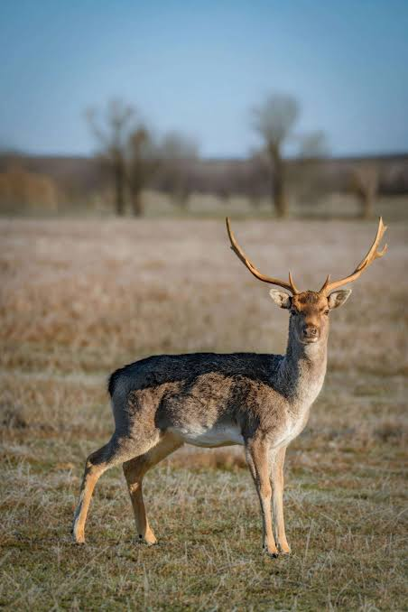
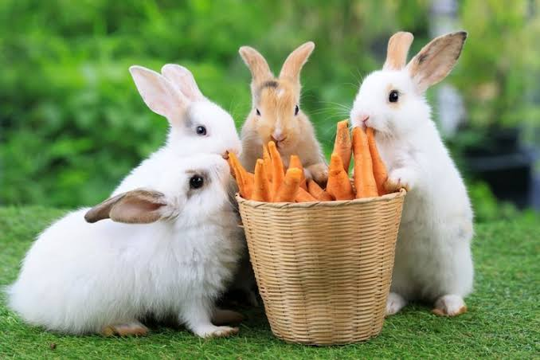
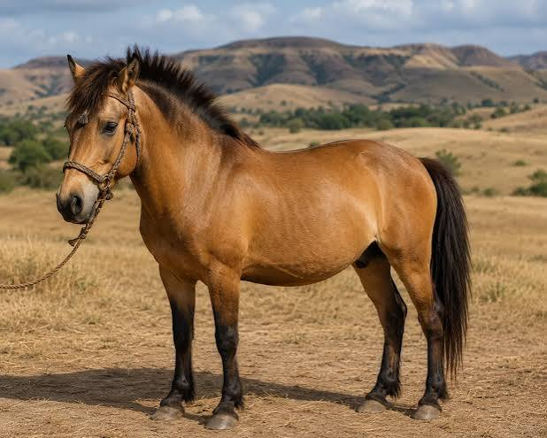
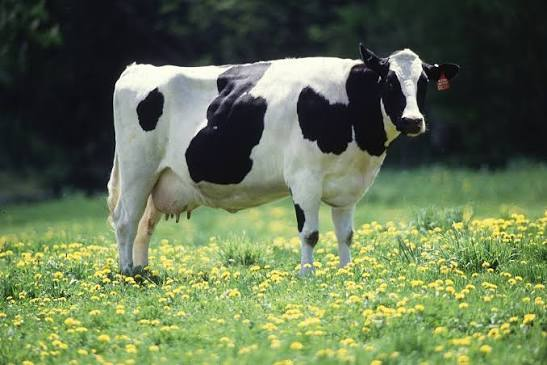

GALERI EDUKASI
Contoh Hewan Herbivora
Berikut beberapa hewan yang termasuk kelompok herbivora.

Gajah
Memakan rumput, daun, kulit pohon, dan buah-buahan.

Jerapah
Memakan daun dari pepohonan, terutama pohon akasia.

Zebra
Memiliki makanan utama berupa rumput di padang savana.

Badak
Memakan rumput, daun, ranting, dan berbagai tumbuhan.

Rusa
Memakan rumput, dedaunan, tunas, dan buah-buahan.

Kelinci
Mengonsumsi rumput, sayuran, dan dedaunan.

Kuda
Memakan rumput dan tanaman lainnya.

Sapi
Memakan rumput dan tumbuhan sebagai sumber makanan utama.